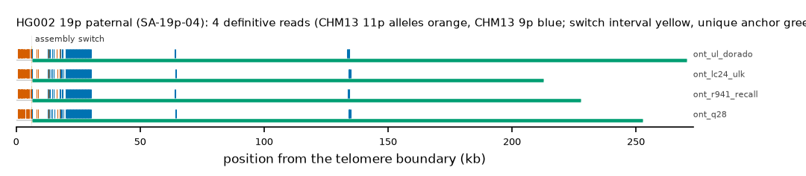

HG002 19p paternal: SA-19p-04
Claim HG002#1#chr19_PATERNAL#L. All claims
- cohort
- HG002 Q100
- individual
- HG002
- haplotype
- paternal
- arm
- 19p
- allele
- SA-19p-04 (foreign)
- model
- donor CHM13 11p, proximal CHM13 9p, recipient CHM13 19p, pattern DP
- claimed end(s)
HG002#1#chr19_PATERNAL#L- assembly switch
- 13,382 bp from the telomere boundary; on CHM13 chr9:21241; own-window projection 6224-6414 bp
- v1 verdict
- confirmed (confirmed)
- definitive tier
- definitive (>= 2 datasets)
- reads
- 28 conclusive switch-concordant, 0 discordant, 0 contradicting, 133 consistent; 4 definitive (ont_lc24_ulk,ont_q28,ont_r941_recall,ont_ul_dorado)
- by tier
- definitive:4;conclusive_shared_anchor:17;conclusive_shared_anchor_off_end:7;consistent:133
- source
- HG002 Q100 v1.1 public read alignments (16 files; 12 independent datasets after molecule de-duplication)

Conclusive and contradicting reads (41)
170 further reads are consistent (switch test passed, but no terminal telomere, anchor or integrity); they are
listed in reads.tsv.gz. Switch: 95% interval in subtelomere coordinates (kb from the
telomere boundary) and projected on CHM13 9p. Each samtools command prints the read's record
from its public file (CRAM: add the CHM13 v2.0 FASTA as -T).
| read | dataset | tier | length | switch (subtelomere, kb) | switch on CHM13 | donor units / purity | proximal units / purity | anchor (CHM13, MAPQ, unique) | own-assembly best end | fetch |
|---|---|---|---|---|---|---|---|---|---|---|
5b430449-7c20-48d8-8f33-415ce8e7d1af | ont_lc24_ulk | definitive | 216,456 | 6.2-6.4 | chr9:10529-10719 | 42 / 1.00 | 79 / 0.94 | chr19:9398-219195, 60, 15.0 kb | HG002#1#chr19_PATERNAL#L (99.5%) ✓ | samtoolssamtools view -F 0x900 -X 'https://human-pangenomics.s3.amazonaws.com/T2T/HG002/assemblies/polishing/HG002/v1.1/mapping/ont_lc24_ulk/hg002v1.1_ont_lc24_ulk.pri.bam' 'https://human-pangenomics.s3.amazonaws.com/T2T/HG002/assemblies/polishing/HG002/v1.1/mapping/ont_lc24_ulk/hg002v1.1_ont_lc24_ulk.pri.bam.bai' 'chr19_PATERNAL:1-45798' | awk -v r='5b430449-7c20-48d8-8f33-415ce8e7d1af' '$1==r' |
9902476c-67bc-4734-99de-dc5d60c2fedf | ont_q28 | definitive | 254,198 | 6.2-6.4 | chr9:10529-10719 | 42 / 1.00 | 78 / 0.94 | chr19:9398-257496, 60, 53.3 kb | HG002#1#chr19_PATERNAL#L (99.9%) ✓ | samtoolssamtools view -F 0x900 -X 'https://human-pangenomics.s3.amazonaws.com/T2T/HG002/assemblies/polishing/HG002/v1.1/mapping/ont_epi2me_q28/hg002v1.1_ont_epi2me_q28.pri.bam' 'https://human-pangenomics.s3.amazonaws.com/T2T/HG002/assemblies/polishing/HG002/v1.1/mapping/ont_epi2me_q28/hg002v1.1_ont_epi2me_q28.pri.bam.bai' 'chr19_PATERNAL:1-45798' | awk -v r='9902476c-67bc-4734-99de-dc5d60c2fedf' '$1==r' |
a4f93a60-f432-4080-8f71-fa290e6b1b33 | ont_r941_recall | definitive | 231,254 | 6.2-6.4 | chr9:10531-10719 | 41 / 1.00 | 79 / 0.95 | chr19:9398-234961, 60, 30.8 kb | HG002#1#chr19_PATERNAL#L (97.7%) ✓ | samtoolssamtools view -F 0x900 -X 'https://human-pangenomics.s3.amazonaws.com/T2T/HG002/assemblies/polishing/HG002/v1.1/mapping/ont_methylation_recall_oct2024/03_08_22_R941_HG002.pri.bam' 'https://human-pangenomics.s3.amazonaws.com/T2T/HG002/assemblies/polishing/HG002/v1.1/mapping/ont_methylation_recall_oct2024/03_08_22_R941_HG002.pri.bam.bai' 'chr19_PATERNAL:1-45798' | awk -v r='a4f93a60-f432-4080-8f71-fa290e6b1b33' '$1==r' |
df724291-307e-4eca-ac1c-b0f51e366789 | ont_ul_dorado | definitive | 272,729 | 6.2-6.4 | chr9:10532-10719 | 42 / 1.00 | 79 / 0.92 | chr19:9398-276305, 60, 72.1 kb | HG002#1#chr19_PATERNAL#L (97.9%) ✓ | samtoolssamtools view -F 0x900 -X 'https://human-pangenomics.s3.amazonaws.com/T2T/HG002/assemblies/polishing/HG002/v1.1/mapping/ont_r10_ul_dorado/hg002v1.1_ont_r10_ul_dorado.pri.bam' 'https://human-pangenomics.s3.amazonaws.com/T2T/HG002/assemblies/polishing/HG002/v1.1/mapping/ont_r10_ul_dorado/hg002v1.1_ont_r10_ul_dorado.pri.bam.bai' 'chr19_PATERNAL:1-45798' | awk -v r='df724291-307e-4eca-ac1c-b0f51e366789' '$1==r' |
9902476c-67bc-4734-99de-dc5d60c2fedf | ont_herro | definitive (not counted: derived) | 254,105 | 6.2-6.4 | chr9:10529-10719 | 42 / 1.00 | 78 / 0.94 | chr19:9398-257490, 60, 53.3 kb | HG002#1#chr19_PATERNAL#L (99.9%) ✓ | samtoolssamtools view -F 0x900 -X 'https://human-pangenomics.s3.amazonaws.com/T2T/HG002/assemblies/polishing/HG002/v1.1/mapping/ont_HERRO_corrected/hg002v1.1_ont_herro_corrected.pri.bam' 'https://human-pangenomics.s3.amazonaws.com/T2T/HG002/assemblies/polishing/HG002/v1.1/mapping/ont_HERRO_corrected/hg002v1.1_ont_herro_corrected.pri.bam.bai' 'chr19_PATERNAL:1-45798' | awk -v r='9902476c-67bc-4734-99de-dc5d60c2fedf' '$1==r' |
5b430449-7c20-48d8-8f33-415ce8e7d1af | ont_q28_lc24 | definitive (not counted: duplicate molecule) | 216,456 | 6.2-6.4 | chr9:10529-10719 | 42 / 1.00 | 79 / 0.94 | chr19:9398-219195, 60, 15.0 kb | HG002#1#chr19_PATERNAL#L (99.5%) ✓ | samtoolssamtools view -F 0x900 -X 'https://human-pangenomics.s3.amazonaws.com/T2T/HG002/assemblies/polishing/HG002/v1.1/mapping/ont_q28_lc24/hg002v1.1_ont_q28_lc24.bam' 'https://human-pangenomics.s3.amazonaws.com/T2T/HG002/assemblies/polishing/HG002/v1.1/mapping/ont_q28_lc24/hg002v1.1_ont_q28_lc24.bam.bai' 'chr19_PATERNAL:1-45798' | awk -v r='5b430449-7c20-48d8-8f33-415ce8e7d1af' '$1==r' |
9902476c-67bc-4734-99de-dc5d60c2fedf | ont_q28_lc24 | definitive (not counted: duplicate molecule) | 254,198 | 6.2-6.4 | chr9:10529-10719 | 42 / 1.00 | 78 / 0.94 | chr19:9398-257496, 60, 53.3 kb | HG002#1#chr19_PATERNAL#L (99.9%) ✓ | samtoolssamtools view -F 0x900 -X 'https://human-pangenomics.s3.amazonaws.com/T2T/HG002/assemblies/polishing/HG002/v1.1/mapping/ont_q28_lc24/hg002v1.1_ont_q28_lc24.bam' 'https://human-pangenomics.s3.amazonaws.com/T2T/HG002/assemblies/polishing/HG002/v1.1/mapping/ont_q28_lc24/hg002v1.1_ont_q28_lc24.bam.bai' 'chr19_PATERNAL:1-45798' | awk -v r='9902476c-67bc-4734-99de-dc5d60c2fedf' '$1==r' |
3e52b873-2310-464c-af56-70774529c006 | ont_lc24_ulk | conclusive, shared anchor | 199,052 | 6.2-6.4 | chr9:10531-10719 | 42 / 1.00 | 78 / 0.94 | chr19:9398-202224, 60, 0.0 kb | HG002#1#chr19_PATERNAL#L (99.8%) ✓ | samtoolssamtools view -F 0x900 -X 'https://human-pangenomics.s3.amazonaws.com/T2T/HG002/assemblies/polishing/HG002/v1.1/mapping/ont_lc24_ulk/hg002v1.1_ont_lc24_ulk.pri.bam' 'https://human-pangenomics.s3.amazonaws.com/T2T/HG002/assemblies/polishing/HG002/v1.1/mapping/ont_lc24_ulk/hg002v1.1_ont_lc24_ulk.pri.bam.bai' 'chr19_PATERNAL:1-45798' | awk -v r='3e52b873-2310-464c-af56-70774529c006' '$1==r' |
dcf7b54f-2f45-4510-98b0-82a1a653a8cb | ont_lc24_ulk | conclusive, shared anchor | 75,220 | 6.2-6.4 | chr9:10532-10719 | 42 / 1.00 | 73 / 0.93 | chr19:9398-75649, 60, 0.0 kb | HG002#1#chr19_PATERNAL#L (99.8%) ✓ | samtoolssamtools view -F 0x900 -X 'https://human-pangenomics.s3.amazonaws.com/T2T/HG002/assemblies/polishing/HG002/v1.1/mapping/ont_lc24_ulk/hg002v1.1_ont_lc24_ulk.pri.bam' 'https://human-pangenomics.s3.amazonaws.com/T2T/HG002/assemblies/polishing/HG002/v1.1/mapping/ont_lc24_ulk/hg002v1.1_ont_lc24_ulk.pri.bam.bai' 'chr19_PATERNAL:1-45798' | awk -v r='dcf7b54f-2f45-4510-98b0-82a1a653a8cb' '$1==r' |
c4c42964-c888-4b92-a8ed-8428610b1613 | ont_lc24_ulk | conclusive, shared anchor | 86,530 | 6.2-6.4 | chr9:10529-10719 | 42 / 1.00 | 73 / 0.93 | chr19:9398-87364, 60, 0.0 kb | HG002#1#chr19_PATERNAL#L (99.7%) ✓ | samtoolssamtools view -F 0x900 -X 'https://human-pangenomics.s3.amazonaws.com/T2T/HG002/assemblies/polishing/HG002/v1.1/mapping/ont_lc24_ulk/hg002v1.1_ont_lc24_ulk.pri.bam' 'https://human-pangenomics.s3.amazonaws.com/T2T/HG002/assemblies/polishing/HG002/v1.1/mapping/ont_lc24_ulk/hg002v1.1_ont_lc24_ulk.pri.bam.bai' 'chr19_PATERNAL:1-45798' | awk -v r='c4c42964-c888-4b92-a8ed-8428610b1613' '$1==r' |
ea23aeee-c5e3-4f6a-830f-d3897bc2c49e | ont_q28 | conclusive, shared anchor | 84,878 | 6.2-6.4 | chr9:10529-10719 | 42 / 1.00 | 74 / 0.93 | chr19:9398-85179, 60, 0.0 kb | HG002#1#chr19_PATERNAL#L (99.8%) ✓ | samtoolssamtools view -F 0x900 -X 'https://human-pangenomics.s3.amazonaws.com/T2T/HG002/assemblies/polishing/HG002/v1.1/mapping/ont_epi2me_q28/hg002v1.1_ont_epi2me_q28.pri.bam' 'https://human-pangenomics.s3.amazonaws.com/T2T/HG002/assemblies/polishing/HG002/v1.1/mapping/ont_epi2me_q28/hg002v1.1_ont_epi2me_q28.pri.bam.bai' 'chr19_PATERNAL:1-45798' | awk -v r='ea23aeee-c5e3-4f6a-830f-d3897bc2c49e' '$1==r' |
0187e137-2be0-45af-8301-5914adc86444 | ont_q28 | conclusive, shared anchor | 57,675 | 6.2-6.4 | chr9:10529-10719 | 42 / 1.00 | 71 / 0.93 | chr19:9398-59476, 60, 0.0 kb | HG002#1#chr19_PATERNAL#L (99.8%) ✓ | samtoolssamtools view -F 0x900 -X 'https://human-pangenomics.s3.amazonaws.com/T2T/HG002/assemblies/polishing/HG002/v1.1/mapping/ont_epi2me_q28/hg002v1.1_ont_epi2me_q28.pri.bam' 'https://human-pangenomics.s3.amazonaws.com/T2T/HG002/assemblies/polishing/HG002/v1.1/mapping/ont_epi2me_q28/hg002v1.1_ont_epi2me_q28.pri.bam.bai' 'chr19_PATERNAL:1-45798' | awk -v r='0187e137-2be0-45af-8301-5914adc86444' '$1==r' |
c398efad-4206-46cc-8622-76b945ab1dde | ont_r941_recall | conclusive, shared anchor | 109,156 | 6.2-6.4 | chr9:10535-10719 | 42 / 1.00 | 74 / 0.93 | chr19:9398-108288, 60, 0.0 kb | HG002#1#chr19_PATERNAL#L (96.9%) ✓ | samtoolssamtools view -F 0x900 -X 'https://human-pangenomics.s3.amazonaws.com/T2T/HG002/assemblies/polishing/HG002/v1.1/mapping/ont_methylation_recall_oct2024/03_08_22_R941_HG002.pri.bam' 'https://human-pangenomics.s3.amazonaws.com/T2T/HG002/assemblies/polishing/HG002/v1.1/mapping/ont_methylation_recall_oct2024/03_08_22_R941_HG002.pri.bam.bai' 'chr19_PATERNAL:1-45798' | awk -v r='c398efad-4206-46cc-8622-76b945ab1dde' '$1==r' |
2cd97d88-a21b-4697-a8bb-3126887ba758 | ont_r941_recall | conclusive, shared anchor | 172,616 | 10.7-10.8 | chr9:10535-10719 | 39 / 1.00 | 78 / 0.94 | chr19:9398-174291, 60, 0.0 kb | HG002#1#chr19_PATERNAL#L (97.0%) ✓ | samtoolssamtools view -F 0x900 -X 'https://human-pangenomics.s3.amazonaws.com/T2T/HG002/assemblies/polishing/HG002/v1.1/mapping/ont_methylation_recall_oct2024/03_08_22_R941_HG002.pri.bam' 'https://human-pangenomics.s3.amazonaws.com/T2T/HG002/assemblies/polishing/HG002/v1.1/mapping/ont_methylation_recall_oct2024/03_08_22_R941_HG002.pri.bam.bai' 'chr19_PATERNAL:1-45798' | awk -v r='2cd97d88-a21b-4697-a8bb-3126887ba758' '$1==r' |
3e0fdc24-b5c4-487e-8696-920a1facad18 | ont_r941_recall | conclusive, shared anchor | 77,318 | 6.2-6.4 | chr9:10484-10719 | 39 / 1.00 | 72 / 0.94 | chr19:9398-79389, 60, 0.0 kb | HG002#1#chr19_PATERNAL#L (96.2%) ✓ | samtoolssamtools view -F 0x900 -X 'https://human-pangenomics.s3.amazonaws.com/T2T/HG002/assemblies/polishing/HG002/v1.1/mapping/ont_methylation_recall_oct2024/03_08_22_R941_HG002.pri.bam' 'https://human-pangenomics.s3.amazonaws.com/T2T/HG002/assemblies/polishing/HG002/v1.1/mapping/ont_methylation_recall_oct2024/03_08_22_R941_HG002.pri.bam.bai' 'chr19_PATERNAL:1-45798' | awk -v r='3e0fdc24-b5c4-487e-8696-920a1facad18' '$1==r' |
fe950165-d1af-423a-9576-13971e64ea52 | ont_ul_dorado | conclusive, shared anchor | 58,952 | 6.2-6.4 | chr9:10528-10719 | 42 / 1.00 | 71 / 0.94 | chr19:9398-59517, 60, 0.0 kb | HG002#1#chr19_PATERNAL#L (99.3%) ✓ | samtoolssamtools view -F 0x900 -X 'https://human-pangenomics.s3.amazonaws.com/T2T/HG002/assemblies/polishing/HG002/v1.1/mapping/ont_r10_ul_dorado/hg002v1.1_ont_r10_ul_dorado.pri.bam' 'https://human-pangenomics.s3.amazonaws.com/T2T/HG002/assemblies/polishing/HG002/v1.1/mapping/ont_r10_ul_dorado/hg002v1.1_ont_r10_ul_dorado.pri.bam.bai' 'chr19_PATERNAL:1-45798' | awk -v r='fe950165-d1af-423a-9576-13971e64ea52' '$1==r' |
12c07ad4-cb16-4d4d-9138-7c9f83e8a3ea | ont_ul_dorado | conclusive, shared anchor | 77,066 | 6.2-6.4 | chr9:10529-10719 | 41 / 1.00 | 74 / 0.93 | chr19:9398-78593, 60, 0.0 kb | HG002#1#chr19_PATERNAL#L (97.5%) ✓ | samtoolssamtools view -F 0x900 -X 'https://human-pangenomics.s3.amazonaws.com/T2T/HG002/assemblies/polishing/HG002/v1.1/mapping/ont_r10_ul_dorado/hg002v1.1_ont_r10_ul_dorado.pri.bam' 'https://human-pangenomics.s3.amazonaws.com/T2T/HG002/assemblies/polishing/HG002/v1.1/mapping/ont_r10_ul_dorado/hg002v1.1_ont_r10_ul_dorado.pri.bam.bai' 'chr19_PATERNAL:1-45798' | awk -v r='12c07ad4-cb16-4d4d-9138-7c9f83e8a3ea' '$1==r' |
5a5db4e9-167a-4835-8b15-c59d13d9925f | ont_ul_dorado | conclusive, shared anchor | 167,985 | 6.2-6.4 | chr9:10529-10719 | 40 / 1.00 | 80 / 0.94 | chr19:9398-173355, 60, 0.0 kb | HG002#1#chr19_PATERNAL#L (97.8%) ✓ | samtoolssamtools view -F 0x900 -X 'https://human-pangenomics.s3.amazonaws.com/T2T/HG002/assemblies/polishing/HG002/v1.1/mapping/ont_r10_ul_dorado/hg002v1.1_ont_r10_ul_dorado.pri.bam' 'https://human-pangenomics.s3.amazonaws.com/T2T/HG002/assemblies/polishing/HG002/v1.1/mapping/ont_r10_ul_dorado/hg002v1.1_ont_r10_ul_dorado.pri.bam.bai' 'chr19_PATERNAL:1-45798' | awk -v r='5a5db4e9-167a-4835-8b15-c59d13d9925f' '$1==r' |
af35d3e7-89b2-4981-afa4-7751ffd75f2f | ont_ul_dorado | conclusive, shared anchor | 84,652 | 6.2-6.4 | chr9:10529-10719 | 41 / 1.00 | 74 / 0.93 | chr19:9398-86619, 60, 0.0 kb | HG002#1#chr19_PATERNAL#L (99.2%) ✓ | samtoolssamtools view -F 0x900 -X 'https://human-pangenomics.s3.amazonaws.com/T2T/HG002/assemblies/polishing/HG002/v1.1/mapping/ont_r10_ul_dorado/hg002v1.1_ont_r10_ul_dorado.pri.bam' 'https://human-pangenomics.s3.amazonaws.com/T2T/HG002/assemblies/polishing/HG002/v1.1/mapping/ont_r10_ul_dorado/hg002v1.1_ont_r10_ul_dorado.pri.bam.bai' 'chr19_PATERNAL:1-45798' | awk -v r='af35d3e7-89b2-4981-afa4-7751ffd75f2f' '$1==r' |
b1e96bfb-940e-4ce0-9886-7f84e05a4150 | ont_ul_dorado | conclusive, shared anchor | 97,111 | 6.2-6.4 | chr9:10531-10719 | 42 / 1.00 | 74 / 0.93 | chr19:9398-99471, 60, 0.0 kb | HG002#1#chr19_PATERNAL#L (98.2%) ✓ | samtoolssamtools view -F 0x900 -X 'https://human-pangenomics.s3.amazonaws.com/T2T/HG002/assemblies/polishing/HG002/v1.1/mapping/ont_r10_ul_dorado/hg002v1.1_ont_r10_ul_dorado.pri.bam' 'https://human-pangenomics.s3.amazonaws.com/T2T/HG002/assemblies/polishing/HG002/v1.1/mapping/ont_r10_ul_dorado/hg002v1.1_ont_r10_ul_dorado.pri.bam.bai' 'chr19_PATERNAL:1-45798' | awk -v r='b1e96bfb-940e-4ce0-9886-7f84e05a4150' '$1==r' |
430a0e69-119d-4202-a233-d58c6b334889 | ont_ul_dorado | conclusive, shared anchor | 165,417 | 6.2-6.4 | chr9:10532-10719 | 41 / 0.98 | 79 / 0.94 | chr19:9398-170860, 60, 0.0 kb | HG002#1#chr19_PATERNAL#L (99.3%) ✓ | samtoolssamtools view -F 0x900 -X 'https://human-pangenomics.s3.amazonaws.com/T2T/HG002/assemblies/polishing/HG002/v1.1/mapping/ont_r10_ul_dorado/hg002v1.1_ont_r10_ul_dorado.pri.bam' 'https://human-pangenomics.s3.amazonaws.com/T2T/HG002/assemblies/polishing/HG002/v1.1/mapping/ont_r10_ul_dorado/hg002v1.1_ont_r10_ul_dorado.pri.bam.bai' 'chr19_PATERNAL:1-45798' | awk -v r='430a0e69-119d-4202-a233-d58c6b334889' '$1==r' |
278404c8-0821-494c-9fe9-60177bbe384d | ont_ul_dorado | conclusive, shared anchor | 78,339 | 6.2-6.4 | chr9:10530-10719 | 40 / 1.00 | 73 / 0.93 | chr19:9398-80488, 60, 0.0 kb | HG002#1#chr19_PATERNAL#L (99.1%) ✓ | samtoolssamtools view -F 0x900 -X 'https://human-pangenomics.s3.amazonaws.com/T2T/HG002/assemblies/polishing/HG002/v1.1/mapping/ont_r10_ul_dorado/hg002v1.1_ont_r10_ul_dorado.pri.bam' 'https://human-pangenomics.s3.amazonaws.com/T2T/HG002/assemblies/polishing/HG002/v1.1/mapping/ont_r10_ul_dorado/hg002v1.1_ont_r10_ul_dorado.pri.bam.bai' 'chr19_PATERNAL:1-45798' | awk -v r='278404c8-0821-494c-9fe9-60177bbe384d' '$1==r' |
f44e6e1b-b24f-4809-a560-de4ae59268cd | ont_ul_dorado | conclusive, shared anchor | 168,624 | 6.4-6.7 | chr9:10480-10719 | 41 / 1.00 | 79 / 0.94 | chr19:9398-174364, 60, 0.0 kb | HG002#1#chr19_PATERNAL#L (99.2%) ✓ | samtoolssamtools view -F 0x900 -X 'https://human-pangenomics.s3.amazonaws.com/T2T/HG002/assemblies/polishing/HG002/v1.1/mapping/ont_r10_ul_dorado/hg002v1.1_ont_r10_ul_dorado.pri.bam' 'https://human-pangenomics.s3.amazonaws.com/T2T/HG002/assemblies/polishing/HG002/v1.1/mapping/ont_r10_ul_dorado/hg002v1.1_ont_r10_ul_dorado.pri.bam.bai' 'chr19_PATERNAL:1-45798' | awk -v r='f44e6e1b-b24f-4809-a560-de4ae59268cd' '$1==r' |
073c3e84-6d9f-4143-a58a-d3675b8f1a12 | ont_ul_dorado | conclusive, shared anchor | 196,443 | 6.2-6.4 | chr9:10529-10719 | 41 / 1.00 | 79 / 0.94 | chr19:9398-202265, 60, 0.0 kb | HG002#1#chr19_PATERNAL#L (99.5%) ✓ | samtoolssamtools view -F 0x900 -X 'https://human-pangenomics.s3.amazonaws.com/T2T/HG002/assemblies/polishing/HG002/v1.1/mapping/ont_r10_ul_dorado/hg002v1.1_ont_r10_ul_dorado.pri.bam' 'https://human-pangenomics.s3.amazonaws.com/T2T/HG002/assemblies/polishing/HG002/v1.1/mapping/ont_r10_ul_dorado/hg002v1.1_ont_r10_ul_dorado.pri.bam.bai' 'chr19_PATERNAL:1-45798' | awk -v r='073c3e84-6d9f-4143-a58a-d3675b8f1a12' '$1==r' |
ea23aeee-c5e3-4f6a-830f-d3897bc2c49e | ont_herro | conclusive, shared anchor (not counted: derived) | 84,830 | 6.2-6.4 | chr9:10529-10719 | 42 / 1.00 | 73 / 0.93 | chr19:9398-85175, 60, 0.0 kb | HG002#1#chr19_PATERNAL#L (99.8%) ✓ | samtoolssamtools view -F 0x900 -X 'https://human-pangenomics.s3.amazonaws.com/T2T/HG002/assemblies/polishing/HG002/v1.1/mapping/ont_HERRO_corrected/hg002v1.1_ont_herro_corrected.pri.bam' 'https://human-pangenomics.s3.amazonaws.com/T2T/HG002/assemblies/polishing/HG002/v1.1/mapping/ont_HERRO_corrected/hg002v1.1_ont_herro_corrected.pri.bam.bai' 'chr19_PATERNAL:1-45798' | awk -v r='ea23aeee-c5e3-4f6a-830f-d3897bc2c49e' '$1==r' |
0187e137-2be0-45af-8301-5914adc86444 | ont_herro | conclusive, shared anchor (not counted: derived) | 57,593 | 6.2-6.4 | chr9:10529-10719 | 42 / 1.00 | 71 / 0.93 | chr19:9398-59473, 60, 0.0 kb | HG002#1#chr19_PATERNAL#L (99.8%) ✓ | samtoolssamtools view -F 0x900 -X 'https://human-pangenomics.s3.amazonaws.com/T2T/HG002/assemblies/polishing/HG002/v1.1/mapping/ont_HERRO_corrected/hg002v1.1_ont_herro_corrected.pri.bam' 'https://human-pangenomics.s3.amazonaws.com/T2T/HG002/assemblies/polishing/HG002/v1.1/mapping/ont_HERRO_corrected/hg002v1.1_ont_herro_corrected.pri.bam.bai' 'chr19_PATERNAL:1-45798' | awk -v r='0187e137-2be0-45af-8301-5914adc86444' '$1==r' |
ea23aeee-c5e3-4f6a-830f-d3897bc2c49e | ont_q28_lc24 | conclusive, shared anchor (not counted: duplicate molecule) | 84,878 | 6.2-6.4 | chr9:10529-10719 | 42 / 1.00 | 74 / 0.93 | chr19:9398-85179, 60, 0.0 kb | HG002#1#chr19_PATERNAL#L (99.8%) ✓ | samtoolssamtools view -F 0x900 -X 'https://human-pangenomics.s3.amazonaws.com/T2T/HG002/assemblies/polishing/HG002/v1.1/mapping/ont_q28_lc24/hg002v1.1_ont_q28_lc24.bam' 'https://human-pangenomics.s3.amazonaws.com/T2T/HG002/assemblies/polishing/HG002/v1.1/mapping/ont_q28_lc24/hg002v1.1_ont_q28_lc24.bam.bai' 'chr19_PATERNAL:1-45798' | awk -v r='ea23aeee-c5e3-4f6a-830f-d3897bc2c49e' '$1==r' |
3e52b873-2310-464c-af56-70774529c006 | ont_q28_lc24 | conclusive, shared anchor (not counted: duplicate molecule) | 199,052 | 6.2-6.4 | chr9:10531-10719 | 42 / 1.00 | 78 / 0.94 | chr19:9398-202224, 60, 0.0 kb | HG002#1#chr19_PATERNAL#L (99.8%) ✓ | samtoolssamtools view -F 0x900 -X 'https://human-pangenomics.s3.amazonaws.com/T2T/HG002/assemblies/polishing/HG002/v1.1/mapping/ont_q28_lc24/hg002v1.1_ont_q28_lc24.bam' 'https://human-pangenomics.s3.amazonaws.com/T2T/HG002/assemblies/polishing/HG002/v1.1/mapping/ont_q28_lc24/hg002v1.1_ont_q28_lc24.bam.bai' 'chr19_PATERNAL:1-45798' | awk -v r='3e52b873-2310-464c-af56-70774529c006' '$1==r' |
dcf7b54f-2f45-4510-98b0-82a1a653a8cb | ont_q28_lc24 | conclusive, shared anchor (not counted: duplicate molecule) | 75,220 | 6.2-6.4 | chr9:10532-10719 | 42 / 1.00 | 73 / 0.93 | chr19:9398-75649, 60, 0.0 kb | HG002#1#chr19_PATERNAL#L (99.8%) ✓ | samtoolssamtools view -F 0x900 -X 'https://human-pangenomics.s3.amazonaws.com/T2T/HG002/assemblies/polishing/HG002/v1.1/mapping/ont_q28_lc24/hg002v1.1_ont_q28_lc24.bam' 'https://human-pangenomics.s3.amazonaws.com/T2T/HG002/assemblies/polishing/HG002/v1.1/mapping/ont_q28_lc24/hg002v1.1_ont_q28_lc24.bam.bai' 'chr19_PATERNAL:1-45798' | awk -v r='dcf7b54f-2f45-4510-98b0-82a1a653a8cb' '$1==r' |
c4c42964-c888-4b92-a8ed-8428610b1613 | ont_q28_lc24 | conclusive, shared anchor (not counted: duplicate molecule) | 86,530 | 6.2-6.4 | chr9:10529-10719 | 42 / 1.00 | 73 / 0.93 | chr19:9398-87364, 60, 0.0 kb | HG002#1#chr19_PATERNAL#L (99.7%) ✓ | samtoolssamtools view -F 0x900 -X 'https://human-pangenomics.s3.amazonaws.com/T2T/HG002/assemblies/polishing/HG002/v1.1/mapping/ont_q28_lc24/hg002v1.1_ont_q28_lc24.bam' 'https://human-pangenomics.s3.amazonaws.com/T2T/HG002/assemblies/polishing/HG002/v1.1/mapping/ont_q28_lc24/hg002v1.1_ont_q28_lc24.bam.bai' 'chr19_PATERNAL:1-45798' | awk -v r='c4c42964-c888-4b92-a8ed-8428610b1613' '$1==r' |
0187e137-2be0-45af-8301-5914adc86444 | ont_q28_lc24 | conclusive, shared anchor (not counted: duplicate molecule) | 57,675 | 6.2-6.4 | chr9:10529-10719 | 42 / 1.00 | 71 / 0.93 | chr19:9398-59476, 60, 0.0 kb | HG002#1#chr19_PATERNAL#L (99.8%) ✓ | samtoolssamtools view -F 0x900 -X 'https://human-pangenomics.s3.amazonaws.com/T2T/HG002/assemblies/polishing/HG002/v1.1/mapping/ont_q28_lc24/hg002v1.1_ont_q28_lc24.bam' 'https://human-pangenomics.s3.amazonaws.com/T2T/HG002/assemblies/polishing/HG002/v1.1/mapping/ont_q28_lc24/hg002v1.1_ont_q28_lc24.bam.bai' 'chr19_PATERNAL:1-45798' | awk -v r='0187e137-2be0-45af-8301-5914adc86444' '$1==r' |
e94a6349-f172-4e4b-879b-aef661584408 | ont_lc24_ulk | conclusive, shared anchor, another end | 63,338 | 6.2-6.4 | chr9:10529-10719 | 42 / 1.00 | 71 / 0.93 | chr19:9398-63452, 60, 0.0 kb | HG002#2#chr3_MATERNAL#R (98.8%) (not claimed end) | samtoolssamtools view -F 0x900 -X 'https://human-pangenomics.s3.amazonaws.com/T2T/HG002/assemblies/polishing/HG002/v1.1/mapping/ont_lc24_ulk/hg002v1.1_ont_lc24_ulk.pri.bam' 'https://human-pangenomics.s3.amazonaws.com/T2T/HG002/assemblies/polishing/HG002/v1.1/mapping/ont_lc24_ulk/hg002v1.1_ont_lc24_ulk.pri.bam.bai' 'chr19_PATERNAL:1-45798' | awk -v r='e94a6349-f172-4e4b-879b-aef661584408' '$1==r' |
04a11908-8081-4a37-b403-c66eeb5b14fa | ont_lc24_ulk | conclusive, shared anchor, another end | 65,193 | 6.2-6.4 | chr9:10529-10719 | 42 / 1.00 | 71 / 0.93 | chr19:9398-65262, 60, 0.0 kb | HG002#2#chr3_MATERNAL#R (98.5%) (not claimed end) | samtoolssamtools view -F 0x900 -X 'https://human-pangenomics.s3.amazonaws.com/T2T/HG002/assemblies/polishing/HG002/v1.1/mapping/ont_lc24_ulk/hg002v1.1_ont_lc24_ulk.pri.bam' 'https://human-pangenomics.s3.amazonaws.com/T2T/HG002/assemblies/polishing/HG002/v1.1/mapping/ont_lc24_ulk/hg002v1.1_ont_lc24_ulk.pri.bam.bai' 'chr19_PATERNAL:1-45798' | awk -v r='04a11908-8081-4a37-b403-c66eeb5b14fa' '$1==r' |
58de9d7b-50d1-4e33-b0a9-dd8b1b2b95bc | ont_lc24_ulk | conclusive, shared anchor, another end | 76,807 | 6.2-6.4 | chr9:10528-10719 | 42 / 1.00 | 73 / 0.93 | chr19:9398-76576, 60, 0.0 kb | HG002#2#chr3_MATERNAL#R (99.1%) (not claimed end) | samtoolssamtools view -F 0x900 -X 'https://human-pangenomics.s3.amazonaws.com/T2T/HG002/assemblies/polishing/HG002/v1.1/mapping/ont_lc24_ulk/hg002v1.1_ont_lc24_ulk.pri.bam' 'https://human-pangenomics.s3.amazonaws.com/T2T/HG002/assemblies/polishing/HG002/v1.1/mapping/ont_lc24_ulk/hg002v1.1_ont_lc24_ulk.pri.bam.bai' 'chr19_PATERNAL:1-45798' | awk -v r='58de9d7b-50d1-4e33-b0a9-dd8b1b2b95bc' '$1==r' |
3afb0f74-de10-4490-b4ed-c73a56061274 | ont_r941_recall | conclusive, shared anchor, another end | 72,931 | 9.3-9.5 | chr9:10530-10719 | 40 / 1.00 | 73 / 0.93 | chr19:9398-72551, 60, 0.0 kb | HG002#2#chr3_MATERNAL#R (97.0%) (not claimed end) | samtoolssamtools view -F 0x900 -X 'https://human-pangenomics.s3.amazonaws.com/T2T/HG002/assemblies/polishing/HG002/v1.1/mapping/ont_methylation_recall_oct2024/03_08_22_R941_HG002.pri.bam' 'https://human-pangenomics.s3.amazonaws.com/T2T/HG002/assemblies/polishing/HG002/v1.1/mapping/ont_methylation_recall_oct2024/03_08_22_R941_HG002.pri.bam.bai' 'chr19_PATERNAL:1-45798' | awk -v r='3afb0f74-de10-4490-b4ed-c73a56061274' '$1==r' |
c93c5e3d-fe29-4cc5-8f8d-d10f2e6b17c1 | ont_r941_recall | conclusive, shared anchor, another end | 86,854 | 10.2-10.4 | chr9:10530-10719 | 39 / 1.00 | 73 / 0.93 | chr19:9398-85576, 60, 0.0 kb | HG002#2#chr3_MATERNAL#R (96.4%) (not claimed end) | samtoolssamtools view -F 0x900 -X 'https://human-pangenomics.s3.amazonaws.com/T2T/HG002/assemblies/polishing/HG002/v1.1/mapping/ont_methylation_recall_oct2024/03_08_22_R941_HG002.pri.bam' 'https://human-pangenomics.s3.amazonaws.com/T2T/HG002/assemblies/polishing/HG002/v1.1/mapping/ont_methylation_recall_oct2024/03_08_22_R941_HG002.pri.bam.bai' 'chr19_PATERNAL:1-45798' | awk -v r='c93c5e3d-fe29-4cc5-8f8d-d10f2e6b17c1' '$1==r' |
67e4141b-8c96-4e6c-a915-ebdf96e7f45f | ont_r941_recall | conclusive, shared anchor, another end | 80,658 | 6.2-6.4 | chr9:10524-10719 | 40 / 1.00 | 73 / 0.93 | chr19:9398-80161, 60, 0.0 kb | HG002#2#chr3_MATERNAL#R (95.8%) (not claimed end) | samtoolssamtools view -F 0x900 -X 'https://human-pangenomics.s3.amazonaws.com/T2T/HG002/assemblies/polishing/HG002/v1.1/mapping/ont_methylation_recall_oct2024/03_08_22_R941_HG002.pri.bam' 'https://human-pangenomics.s3.amazonaws.com/T2T/HG002/assemblies/polishing/HG002/v1.1/mapping/ont_methylation_recall_oct2024/03_08_22_R941_HG002.pri.bam.bai' 'chr19_PATERNAL:1-45798' | awk -v r='67e4141b-8c96-4e6c-a915-ebdf96e7f45f' '$1==r' |
373a388c-51de-4be2-8c6e-cf901b034778 | ont_r941_recall | conclusive, shared anchor, another end | 74,491 | 8.6-8.8 | chr9:10536-10719 | 40 / 1.00 | 70 / 0.93 | chr19:9398-69335, 60, 0.0 kb | HG002#2#chr3_MATERNAL#R (95.1%) (not claimed end) | samtoolssamtools view -F 0x900 -X 'https://human-pangenomics.s3.amazonaws.com/T2T/HG002/assemblies/polishing/HG002/v1.1/mapping/ont_methylation_recall_oct2024/03_08_22_R941_HG002.pri.bam' 'https://human-pangenomics.s3.amazonaws.com/T2T/HG002/assemblies/polishing/HG002/v1.1/mapping/ont_methylation_recall_oct2024/03_08_22_R941_HG002.pri.bam.bai' 'chr19_PATERNAL:1-45798' | awk -v r='373a388c-51de-4be2-8c6e-cf901b034778' '$1==r' |
e94a6349-f172-4e4b-879b-aef661584408 | ont_q28_lc24 | conclusive, shared anchor, another end (not counted: duplicate molecule) | 63,338 | 6.2-6.4 | chr9:10529-10719 | 42 / 1.00 | 71 / 0.93 | chr19:9398-63452, 60, 0.0 kb | HG002#2#chr3_MATERNAL#R (98.8%) (not claimed end) | samtoolssamtools view -F 0x900 -X 'https://human-pangenomics.s3.amazonaws.com/T2T/HG002/assemblies/polishing/HG002/v1.1/mapping/ont_q28_lc24/hg002v1.1_ont_q28_lc24.bam' 'https://human-pangenomics.s3.amazonaws.com/T2T/HG002/assemblies/polishing/HG002/v1.1/mapping/ont_q28_lc24/hg002v1.1_ont_q28_lc24.bam.bai' 'chr19_PATERNAL:1-45798' | awk -v r='e94a6349-f172-4e4b-879b-aef661584408' '$1==r' |
04a11908-8081-4a37-b403-c66eeb5b14fa | ont_q28_lc24 | conclusive, shared anchor, another end (not counted: duplicate molecule) | 65,193 | 6.2-6.4 | chr9:10529-10719 | 42 / 1.00 | 71 / 0.93 | chr19:9398-65262, 60, 0.0 kb | HG002#2#chr3_MATERNAL#R (98.5%) (not claimed end) | samtoolssamtools view -F 0x900 -X 'https://human-pangenomics.s3.amazonaws.com/T2T/HG002/assemblies/polishing/HG002/v1.1/mapping/ont_q28_lc24/hg002v1.1_ont_q28_lc24.bam' 'https://human-pangenomics.s3.amazonaws.com/T2T/HG002/assemblies/polishing/HG002/v1.1/mapping/ont_q28_lc24/hg002v1.1_ont_q28_lc24.bam.bai' 'chr19_PATERNAL:1-45798' | awk -v r='04a11908-8081-4a37-b403-c66eeb5b14fa' '$1==r' |
58de9d7b-50d1-4e33-b0a9-dd8b1b2b95bc | ont_q28_lc24 | conclusive, shared anchor, another end (not counted: duplicate molecule) | 76,807 | 6.2-6.4 | chr9:10528-10719 | 42 / 1.00 | 73 / 0.93 | chr19:9398-76576, 60, 0.0 kb | HG002#2#chr3_MATERNAL#R (99.1%) (not claimed end) | samtoolssamtools view -F 0x900 -X 'https://human-pangenomics.s3.amazonaws.com/T2T/HG002/assemblies/polishing/HG002/v1.1/mapping/ont_q28_lc24/hg002v1.1_ont_q28_lc24.bam' 'https://human-pangenomics.s3.amazonaws.com/T2T/HG002/assemblies/polishing/HG002/v1.1/mapping/ont_q28_lc24/hg002v1.1_ont_q28_lc24.bam.bai' 'chr19_PATERNAL:1-45798' | awk -v r='58de9d7b-50d1-4e33-b0a9-dd8b1b2b95bc' '$1==r' |
Files
CRAM/BAM on CHM13 v2.0, BAM on the person's own assembly windows and the window FASTA: release asset subtel_read_evidence_v1_HG002_Q100.tar.gz, directory read_evidence_v1/HG002_Q100/HG002_1_chr19_PATERNAL_L/ (downloads).
Re-derive this verdict
git clone https://github.com/jlanej/human-subtelomere-atlas && cd human-subtelomere-atlas
evidence/replicate_claim.sh 'HG002#1#chr19_PATERNAL#L'The script fetches the cited reads from the public source by region and read ID, re-runs the frozen criteria and compares every per-read and claim verdict with this page (details).